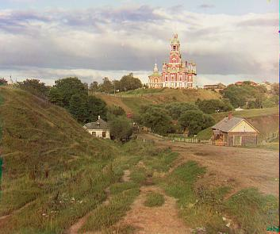
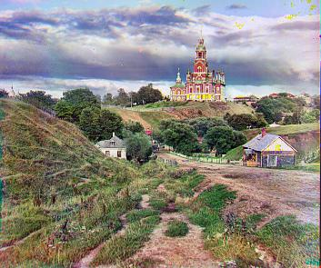
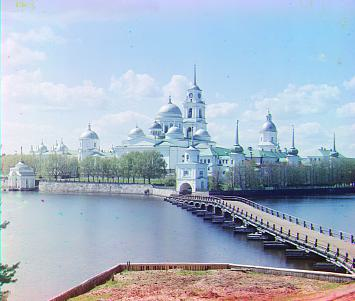
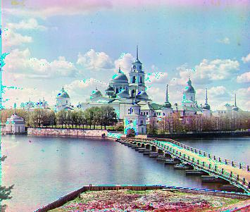
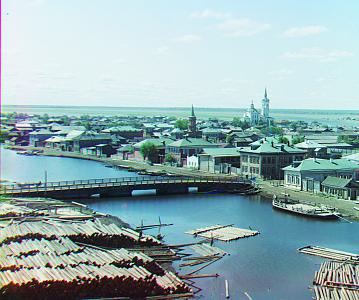
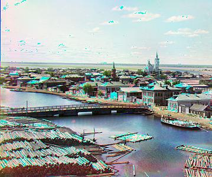

Project Overview
Sergei Mikhailovich Prokudin-Gorskii (1863-1944) was a visionary who foresaw the potential of color photography as early as 1907. He travelled across across the vast Russian Empire, capturing everything he saw. His technique was simple yet groundbreaking: he recorded three exposures of every scene onto a glass plate using red, green, and blue filters. This project aims to take digitized glass plate images and implement image processing techniques to produce color images with minimal visual artifacts.
Approach
For this project, as the course staff suggested, I used a basic approach to image alignment using Normalized Cross-Correlation (NCC), which measures similarity between two images, or their colour channels, by comparing their pixel intensity patterns, and adjusts their positions to achieve maximum alignment. I also included edge detection through a Sobel-like operation that calculates vertical and horizontal gradients, enhancing the edges for better alignment accuracy. The right side of the below samples shows how I built upon NCC w/ edge detection to factor in contrast, white balance, as well as histogram equalization.
Improvements
While I think the overall results from this project are a decent attempt at automatically producing these colour images, my next goal would be to fine tune the alignment for some of the larger .tif images. Additionally, the white balance and contrast on certain pictues could be improved as well.
Results





